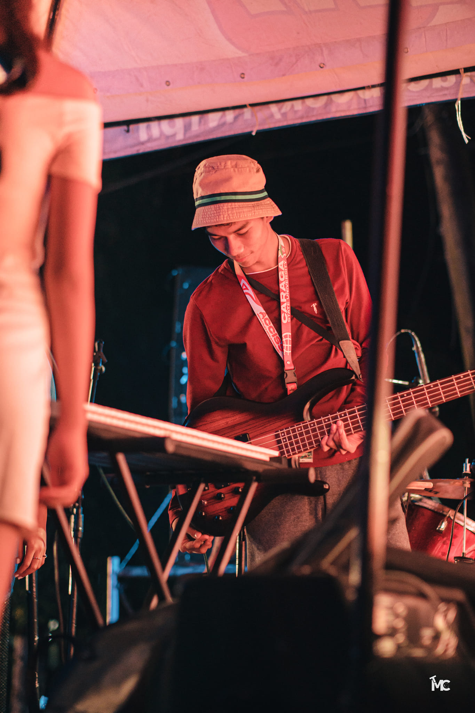
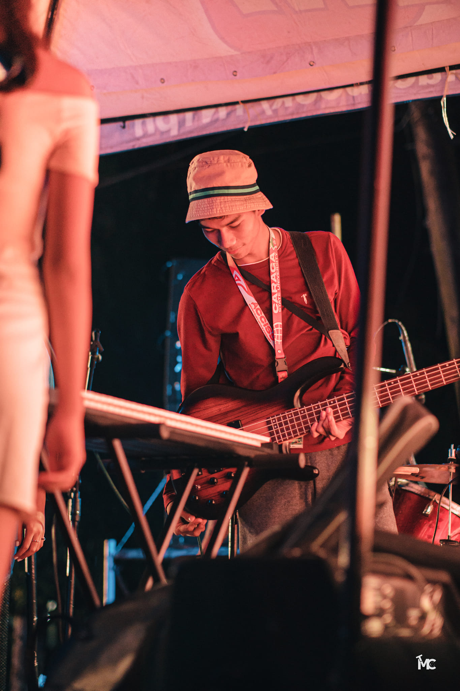

Age: 20
Number: 09462209607
Facebook
YouTube
Download CV
Welcome to Kisshu ^w^, a creative space where my passion for 2D animation and anime drawing comes to life.
I’m thrilled to have you here and share a bit about myself and my artistic journey.
My Name is Kish Jasper G. Sa-ang
Hi, I'm Kish Jasper G. Sa-ang, a 20-year-old student currently pursuing a Bachelor of Science in Information Technology (BSIT) at Caraga State University. I am passionate about technology and its applications, and I'm thrilled to be a part of the College of Computer Information and Sciences. My academic journey is driven by a desire to explore the vast world of IT and contribute to its ever-evolving landscape.
As a student, I am dedicated to acquiring knowledge and honing my skills in various aspects of information technology, including programming, web development, cybersecurity, and more. My time at Caraga State University has been filled with exciting challenges and opportunities, which have further fueled my enthusiasm for the field.
Beyond my academic pursuits, I am always eager to engage with new ideas, projects, and collaborations. I believe that innovation thrives in a collaborative environment, and I am open to connecting with fellow students, professionals, and enthusiasts who share my passion for technology.
In my free time, I enjoy exploring the latest tech trends, experimenting with coding projects, and staying up-to-date with industry developments. I am excited about the possibilities that the world of IT offers and look forward to a future where I can make a meaningful impact through my knowledge and skills.
Feel free to connect with me to discuss technology, share ideas, or collaborate on exciting projects. Let's embark on this journey of discovery and innovation together!
 
